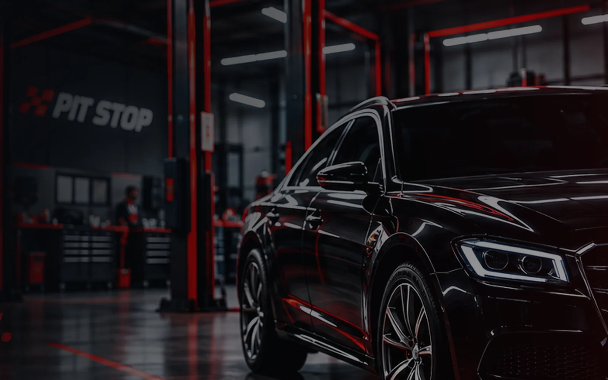
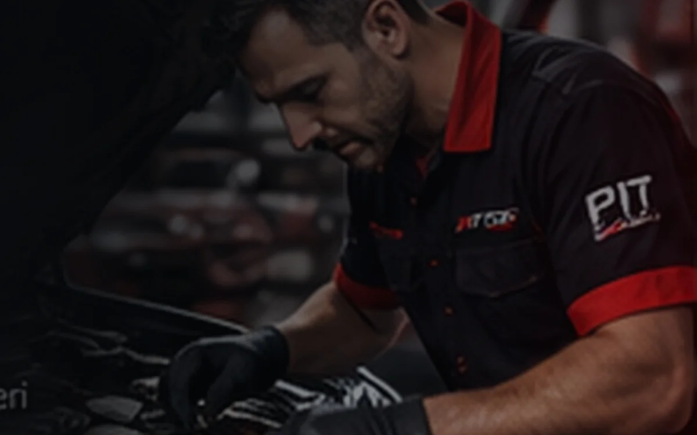
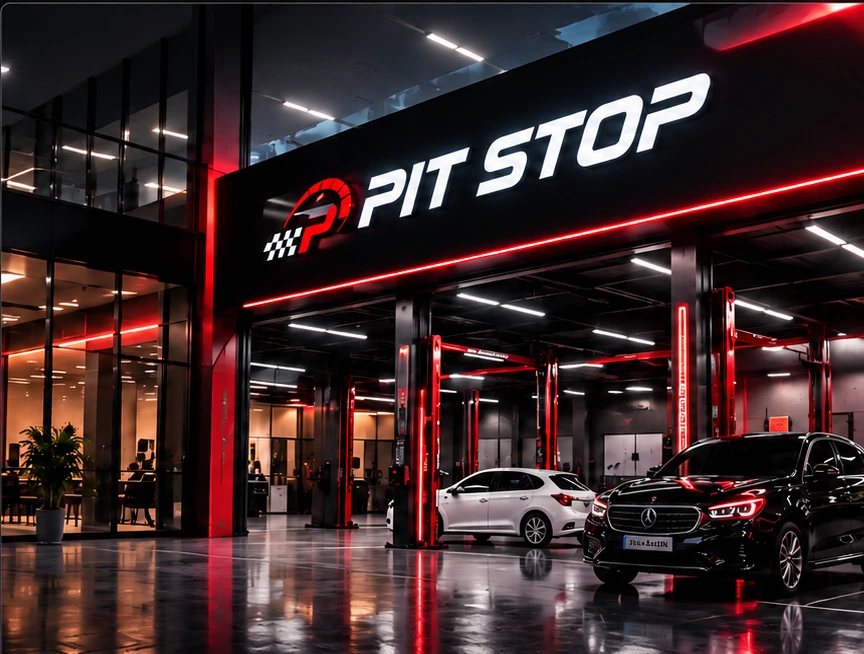
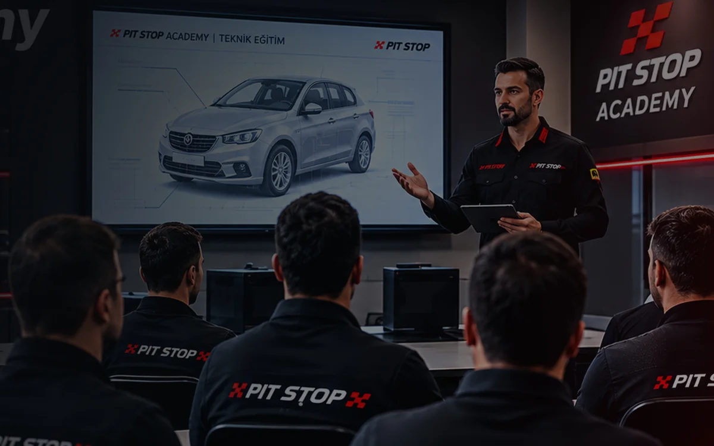

İyi servis,
doğru sistemle
başlar.
Ustalığı teknolojiyle, işletme kültürünü kurumsal bir vizyonla buluşturuyoruz. PIT STOP, servislerin bugününü kolaylaştırmak ve yarınını güçlendirmek için tasarlanıyor.

Güçlü bir servis,
güçlü bir sistem ister.
Bir oto servisini başarılı yapan şey yalnızca iyi işçilik değildir. Doğru bilgiye ulaşmak, iş akışını yönetmek, müşteriye güven vermek ve her gün daha iyiye gitmek de gerekir.
PIT STOP bu parçaları bir araya getirmeyi hedefliyor.
Dağınık kayıtlar yerine izlenebilir bir operasyon.
Açık iletişim, kayıtlı işlemler, şeffaf süreçler.
Standartlar, eğitim ve ölçülebilir ilerleme.
Üç yapı.
Tek vizyon.
Yazılımdan iş ortaklığına, eğitimden kalite anlayışına uzanan bütünleşik bir yaklaşım.

PIT STOP OS
Araç kabulünden iş emrine, müşteri geçmişinden finans takibine kadar servis operasyonlarının dijital merkezi.
Geliştirme aşamasında
PIT STOP Partner
Bağımsız servislerin kendi ustalıklarını koruyarak daha güçlü bir marka ve operasyon standardıyla gelişmesi.
Planlama aşamasında
PIT STOP Academy
Teknisyen gelişimini, sistem eğitimini ve hizmet kalitesini aynı çatı altında destekleyecek eğitim modeli.
Planlama aşamasındaHer şeyin
kontrol altında
olduğu bir servis.
Servis danışmanı, teknisyen ve işletme yöneticisi aynı bilgiye, kendi yetkileriyle erişsin. İşlem geçmişi kaybolmasın; atölyede ne olup bittiği anlaşılır olsun.
Bazı özellikler halen geliştirilmekte ve test edilmektedir.
Kendi işin.
Ortak bir güç.
Güçlü ustalığı kaybetmeden daha iyi bir işletme deneyimi oluşturmak mümkün. PIT STOP Partner modeli; bağımsız servisleri kurumsal kimlik, dijital süreçler ve kalite standartlarıyla buluşturmak üzere planlanıyor.
- Kurumsal kimlik ve atölye standartları
- Ortak dijital operasyon yaklaşımı
- Eğitim ve kalite gelişim desteği
Kalite tesadüf değil.
Bir kültürdür.
İyi bir servis deneyimi, sürekli öğrenen ekiplerle mümkün. PIT STOP Academy; teknik bilgi, müşteri deneyimi ve operasyon standartlarını aynı eğitim anlayışı altında birleştirmek üzere tasarlanıyor.
- Teknik yetkinlik ve sistem eğitimleri
- Standart işçilik ve kalite kontrol
- Ölçülebilir gelişim ve sertifikasyon vizyonu
Geleceği
konuşalım.
PIT STOP OS, iş ortaklığı modeli veya proje hakkında görüşmek için doğrudan iletişime geçebilirsin.
PIT STOP henüz geliştirme aşamasındadır. İletişim, proje tanıtımı ve iş birliği görüşmeleri içindir.